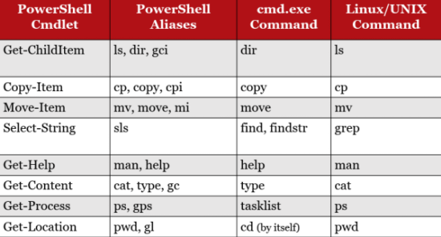
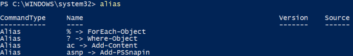

Verbs (cmdlets)
Each command in PowerShell (known as a cmdlet and pronounced "command-lets") has a name that starts with a
verb followed by a
hyphen(-) and ending with a
noun. This is done to help add structure to the language and make it easier to understand.
◇
Verbs:
▪ Set
▪ Get
▪ New
▪ Read
▪ Find
▪ Start
◇ hyphen(-)
◇
Nouns:
▪ can include all kinds of things, including "service", "process", ..
The results of all cmdlet output, are usually referred to as “objects.”
These objects can be further processed using what is known as “pipelining,” similar to how we can chain commands together in a Linux bash shell for instance with the Pipe Operator (|).
List of cmdlets ◇ To get list complete of cmdlets
PS> get-command #to get the list of all the commands
◇ commands associated with a specific
verb PS> get-command Set-* #verb start
PS> get-command Get-* #verb get
PS> get-command New-* #verb new
PS> get-command Read-* #verb read
PS> get-command Find-* #verb find
PS> get-command Start-* #verb start
◇ Commands associated with a Source
get-command *<Source> example PS> get-command *DnsClient
Many of the most popular cmdlets have one or more aliases
To list all aliases
